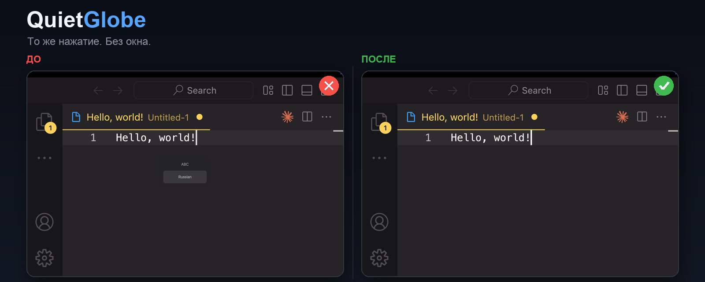

Мгновенно
Переключает раскладку через публичный Text Input Sources API — без анимации, HUD и задержки.
утилита для macOS · open source
QuietGlobe мгновенно переключает раскладку по клавише 🌐 и убирает индикатор источника ввода. Та же клавиша, без окна и задержки.
brew install --cask Nishikinodzuki/quietglobe/quietglobe

При нажатии 🌐 на macOS появляется плавающий индикатор источника ввода с «ABC» / «Russian». Он перекрывает текст, висит на экране до начала печати и мешает записи экрана и демонстрациям.
Штатной настройки macOS, которая убирает это окно, нет. Поэтому и существует QuietGlobe.

Слева — стандартное окно ABC/Russian. Справа — QuietGlobe: то же нажатие, мгновенная смена, без окна.

Переключает раскладку через публичный Text Input Sources API — без анимации, HUD и задержки.
Swift, event tap из CoreGraphics, без приватных фреймворков. Исходный код на GitHub под MIT.
Без сети, аналитики и логирования нажатий. Ввод остаётся на вашем Mac.
QuietGlobe живёт в менюбаре. Клик по глобусу — включить/выключить перехват, автозапуск, настройки Accessibility или выход.
brew install --cask Nishikinodzuki/quietglobe/quietglobeИли скачайте последний релиз и перенесите QuietGlobe.app в /Applications.
macOS не позволяет выдать Accessibility автоматически. Это системное требование безопасности.
Установите QuietGlobe, выдайте разрешение Accessibility и оставьте 🌐 в режиме «Change Input Source». QuietGlobe сам переключает раскладку и подавляет индикатор. Штатной настройки macOS, которая убирает это окно, нет.
macOS показывает его при смене раскладки по 🌐 или горячей клавише. Он должен подтверждать новую раскладку, но часто висит на экране до начала печати и мешает.
Чтобы перехватить 🌐 до появления системного HUD, QuietGlobe использует event tap macOS. Для глобального перехвата клавиш macOS требует Accessibility. QuietGlobe не читает, не хранит и не отправляет нажатия.
Да. QuietGlobe бесплатный и открытый, под лицензией MIT. Без рекламы, подписок и аналитики.
Да, QuietGlobe рассчитан на macOS 13 Ventura и новее. Собирается как Universal 2 для Apple Silicon и Intel.
| macOS | Статус |
|---|---|
| macOS 13 Ventura | Поддерживается |
| macOS 14 Sonoma | Поддерживается |
| macOS 15 Sequoia | Поддерживается |
| macOS 26 / 27 | Поддерживается (проверено на 27.2) |